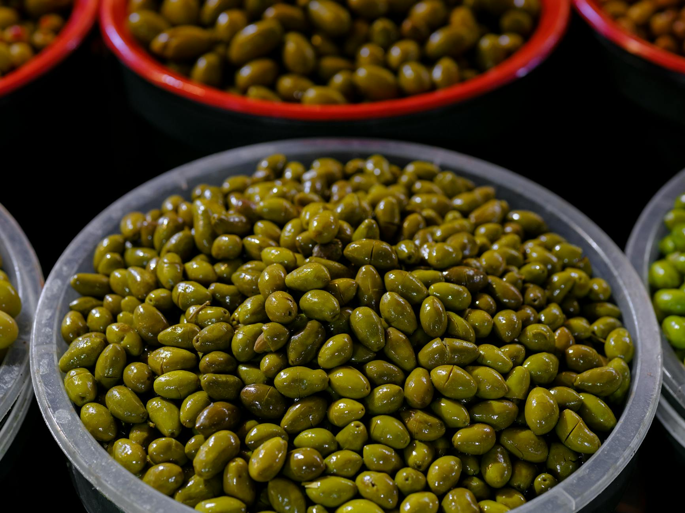

What Foods Lower Inflammation Naturally?
Key takeaways
- Inflammation is a natural process, but when it sticks around, it can contribute to a range of health issues.
- The good news is you don't need fancy supplements or exotic ingredients to help manage it.
- Focus on: Feeling sluggish or dealing with everyday aches?.

Feeling sluggish or dealing with everyday aches?
Inflammation is a natural process, but when it sticks around, it can contribute to a range of health issues. The good news is you don't need fancy supplements or exotic ingredients to help manage it. Your kitchen likely already holds the keys to reducing your inflammation load. Let's explore how simple food choices can make a big difference.
Understanding Inflammation's Everyday Impact
Think of chronic inflammation as your body's alarm system stuck on "on." This persistent state can affect how you feel day-to-day, from joint stiffness to fatigue. While genetics and lifestyle play roles, your diet is a powerful lever you can pull. Focusing on nutrient-dense foods can help calm that internal chatter.
Your Pantry Powerhouses for Lowering Inflammation
Many common foods are packed with compounds that fight inflammation. Incorporating these into your meals is easier than you think.
Fatty Fish: More Than Just Protein
Salmon, mackerel, and sardines are rich in omega-3 fatty acids, known for their anti-inflammatory properties. Aim to include these in your diet a couple of times a week. For example, a baked salmon fillet with lemon and herbs is a simple yet effective way to boost your omega-3 intake.
Berries: Nature's Antioxidant Boost
Blueberries, strawberries, and raspberries are loaded with antioxidants called anthocyanins. These compounds help combat inflammation. Sprinkle them on your morning oatmeal, add them to smoothies, or enjoy a handful as a snack.
Leafy Greens: The More, The Better
Spinach, kale, and Swiss chard are brimming with vitamins, minerals, and antioxidants. They are versatile and can be added to almost any meal. Try a spinach salad with berries and nuts, or sauté kale as a side dish.
Nuts and Seeds: Small but Mighty
Almonds, walnuts, chia seeds, and flaxseeds offer healthy fats, fiber, and anti-inflammatory compounds. A small handful of almonds or a tablespoon of chia seeds in your yogurt can provide a significant anti-inflammatory boost.
Olive Oil: The Mediterranean Staple
Extra virgin olive oil is a cornerstone of the Mediterranean diet and contains oleocanthal, which has anti-inflammatory effects similar to ibuprofen. Use it for dressings, sautéing, or drizzling over vegetables.
Turmeric and Ginger: Flavorful Fighters
These spices aren't just for flavor; they contain potent anti-inflammatory compounds like curcumin (turmeric) and gingerol (ginger). Add fresh ginger to stir-fries or smoothies, and use turmeric in curries or even scrambled eggs.
Actionable Steps for Today
Making dietary changes doesn't have to be overwhelming. Start small with these practical tips:
Your Anti-Inflammatory Checklist:
- Swap refined grains for whole grains at least once a day.
- Add a serving of berries to your breakfast or snack.
- Use olive oil instead of butter for cooking when possible.
- Include a handful of nuts or seeds in your daily routine.
- Incorporate leafy greens into one meal per day.
These small shifts can add up to significant benefits over time. Remember, consistency is key. For more ideas on healthy eating, check out our tips for better meal prep and understanding macronutrients.
Common Mistakes to Avoid
While focusing on anti-inflammatory foods is great, it's also important to be mindful of what might be working against you. Overconsumption of processed foods, sugary drinks, and excessive saturated fats can fuel inflammation. Making conscious choices to limit these can amplify the benefits of your healthy food choices. Learning to read food labels can help you identify hidden sugars and unhealthy fats. For more on making informed choices, see our guide to navigating food labels and healthy snack swaps.
Educational only — not medical advice.
Frequently Asked Questions
What is inflammation?
Inflammation is your body's natural response to injury or infection. Chronic inflammation, however, can persist and contribute to various health concerns.
How quickly can I expect to see results from eating anti-inflammatory foods?
Results vary, but many people begin to notice improvements in energy levels and reduced discomfort within a few weeks of consistent dietary changes.
Can I still eat foods that might cause inflammation?
Moderation is key. While focusing on anti-inflammatory foods, it's also about reducing your intake of pro-inflammatory foods rather than complete elimination for most people.
Are there any side effects to eating these foods?
These are generally healthy foods. As with any dietary change, introduce new foods gradually if you have a sensitive digestive system. Consult a healthcare provider if you have specific concerns.
How much anti-inflammatory food should I eat daily?
Aim to make these foods a regular part of your meals and snacks throughout the day, rather than focusing on a specific quantity. Variety is beneficial.
By incorporating these simple, everyday ingredients into your diet, you can take proactive steps toward reducing inflammation and supporting your overall well-being. For more insights into a healthy lifestyle, explore our article on building sustainable healthy habits.
Related posts
When to Eat for Better Gut Health? The Role of Meal Timing
Discover how meal timing, fiber, and fermented foods can improve your gut health. Learn practical tips for a healthier digestive system.
Read more →
How to Make Healthy Meals When You Have No Time
Discover quick and easy healthy meal ideas for busy weeknights. Learn practical tips and recipes to eat well even on your busiest days.
Read more →
What Daily Habits Boost Longevity?
Discover evidence-aligned daily routines and habits that can help you live a longer, healthier life. Learn practical tips for better sleep,
Read more →